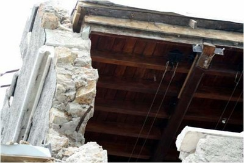
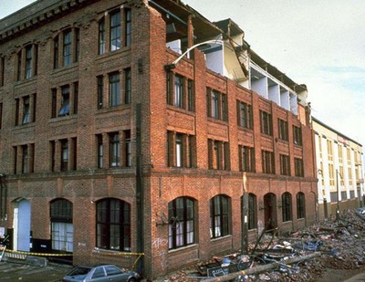
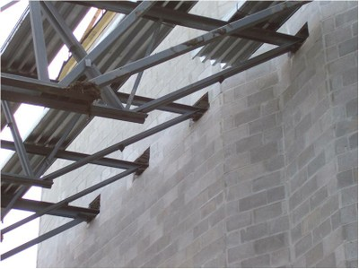

Conexión del diafragma del techo al muro no provista [RWCN]
No hay conexiones entre el diafragma del techo y los muros que sean capaces de transferir fuerzas en el plano del techo a las paredes y restringir desplazamientos fuera de los muros.

Ejemplo de conexiones de un diafragma de cubierta de acero a un muro de mampostería de concreto que puede ser inadecuada (adaptado de FEMA 172, 1992)

Una conexión inadecuada de un techo de madera a un muro de mampostería en un edificio dañado durante el terremoto de 2011 en Christchurch, Nueva Zelandia (W. Clark)

Colapso fuera del plano de muros de mampostería en el nivel superior del edificio debido a conexiones inadecuadas del techo a los muros, terremoto de 1989 Loma Prieta, California (EERI)

Colapso fuera del plano de muros de mampostería en un edificio dañado en el terremoto de 1994 Northridge, California; note los anclajes techo-muro (EERI)


Conexiones del diafragma techo-muro entre cerchas de acero (conocidas como mallas abiertas de viguetas de acero en Norte América) y muros de mampostería que pueden ser inadecuados si las dimensiones de soporte y amarre no son adecuadamente diseñadas y/ construidas (J. Adams)